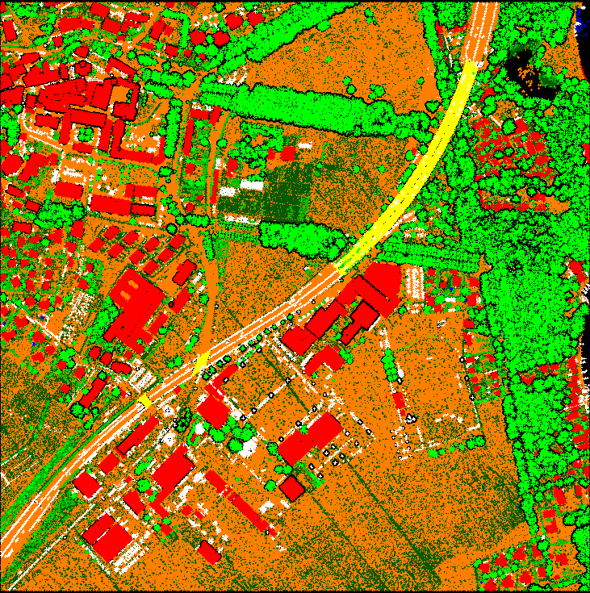
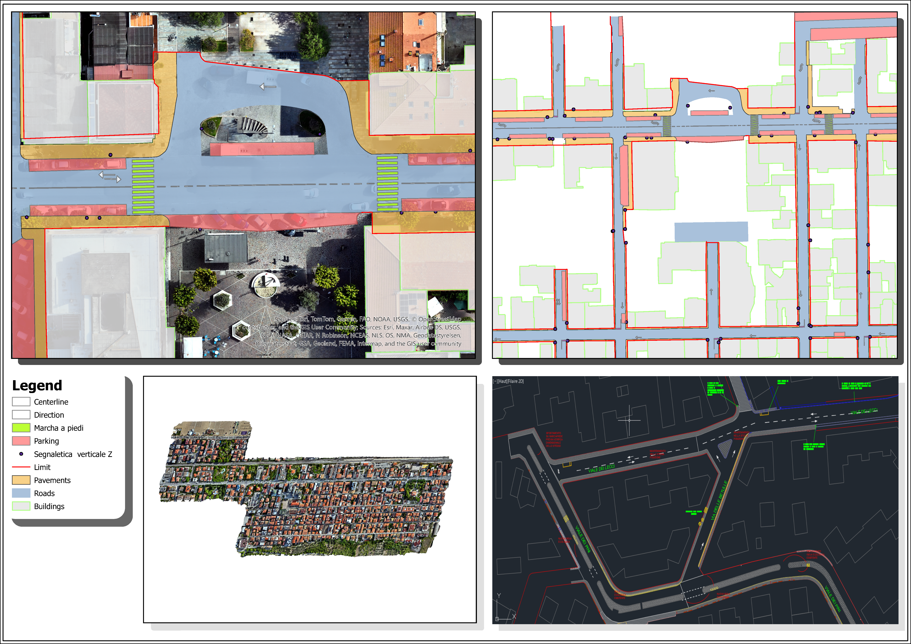

Featured Projects
Four production projects that show how I design spatial databases, automate GIS workflows, and deliver validated geospatial products.

Design and Integration of a Geodatabase
I designed and built a centralized municipal geodatabase on SQL Server that turned fragmented legacy data into a validated, multi-user spatial data system.
ArcGIS Pro | SQL Server | Python | Arcade | Versioned Editing
Snapshot
- My role: I designed the schema, led implementation, and built the automation and validation layer.
- Context: Municipality running a multi-department GIS program (client details withheld).
- Scale: ~100 feature classes, 10+ years of legacy records, multi-user editing.
- Technologies: ArcGIS Pro, SQL Server, Python, Arcade.
Challenge
Several departments needed one centralized GIS database instead of disconnected files. The system had to model complex data relationships, enforce validation at entry, and support multi-user editing with proper conflict management.
Technical approach
- I designed a normalized geodatabase schema of approximately 100 feature classes from custom data dictionaries.
- I implemented coded domains so invalid values are blocked at entry, not discovered downstream.
- I created Arcade attribute rules that automate validation and calculated attributes in real time.
- I developed a Python toolbox for ETL and the migration of 10+ years of legacy data into SQL Server.
- I built versioned editing workflows with conflict resolution for simultaneous multi-user work.
Deliverables & validation
- Enterprise geodatabase in SQL Server, Python migration toolbox, and attribute-rule documentation for each department.
- Every migration batch was reconciled against source records to confirm zero feature loss before sign-off.
Results
- 90% fewer data-entry errors after validation rules were enforced
- 10+ years of legacy data migrated without loss
- Departments now edit one shared database instead of separate files
- Automated routines save hours of manual work every day
Why it transfers
Any organization that needs to trust its spatial data needs this exact pattern: a designed schema, enforced validation, and automated migration. I can apply it to utilities, networks, or environmental datasets from day one.

LiDAR Classification with MicroStation
I processed multi-mission aerial LiDAR point clouds into consistently classified datasets and delivered high-resolution DTM and DSM products.
MicroStation | TerraScan | Python (laspy) | Automation
Snapshot
- My role: I built and ran the classification pipeline, from preprocessing to final DTM/DSM delivery.
- Context: Production LiDAR processing for survey deliverables across several flight missions.
- Scale: Multiple flight missions, heterogeneous point densities, ground / vegetation / building classes.
- Technologies: MicroStation, TerraScan, Python (laspy).
Challenge
Raw point clouds arrived from several flight missions with different point densities and inconsistent pre-assigned classifications — making reliable terrain modeling impossible until the data was standardized.
Technical approach
- I developed MicroStation macros to automate preprocessing and cleaning of incoming point clouds.
- I implemented custom classification routines in TerraScan to standardize ground, vegetation, and building classes across all missions.
- I wrote Python scripts with laspy to automate LAS splitting, validation, and merging, so every tile leaving the pipeline was structurally valid.
- I produced high-resolution DTM and DSM products from the cleaned, classified clouds.
Deliverables & validation
- Classified point clouds, LAS tile sets, and DTM/DSM products ready for engineering use.
- Classification was verified through systematic sampling and visual QC passes before delivery, reaching approximately 95% accuracy in these project checks.
Results
- About 15% faster processing on production batches after automation
- Approximately 95% classification accuracy in project validation checks
- High-resolution DTM/DSM products delivered for every mission
- The workflow became the office standard for subsequent LiDAR projects
Why it transfers
Consistent point-cloud classification is the foundation of every terrain analysis, flood study, and 3D product built on top of it. I can step into an existing LiDAR pipeline and keep it accurate, automated, and documented.

Digitization & QGIS Plugin Development
I digitized cadastral maps from drone imagery across 40+ municipalities and developed a PyQGIS plugin that automated bulk attribute editing.
QGIS | Python (PyQGIS) | Drone Imagery | QA/QC
Snapshot
- My role: I performed the digitization and designed, developed, and delivered the QGIS plugin.
- Context: Engineering firm running a multi-municipality cadastral mapping program (client details withheld).
- Scale: 40+ municipalities, large-volume drone imagery, sub-meter positional target.
- Technologies: QGIS, PyQGIS, drone imagery, QA/QC workflows.
Challenge
An engineering firm needed rapid, accurate digitization of cadastral maps over drone imagery — with results that had to slot straight into existing GIS workflows and hold up to sub-meter accuracy requirements.
Technical approach
- I digitized cadastral and urban features from drone imagery, following strict QA/QC procedures.
- I developed a QGIS plugin that applies multiple rule-based conditions simultaneously to bulk-update attributes on large datasets.
- I integrated Python batch-processing scripts for vector layers to cut repetitive editing steps.
Deliverables & validation
- Clean digitized layers for 40+ municipalities, plus a reusable, adaptable plugin retained for future projects.
- Each batch passed visual inspection and spatial-accuracy checks against reference imagery before delivery.
Results
- Digitized 40+ municipalities
- Cut processing time by about 20% compared with fully manual workflows
- Held sub-meter spatial accuracy consistently across batches
- The plugin remains reusable for future mapping programs
Why it transfers
This project shows both production speed and tooling judgment: when the manual workflow was slow, I built the tool that fixed it — and the tool outlived the project.
Fiber Optic & Infrastructure Network Management
I updated, integrated, and harmonized fiber-optic and electrical infrastructure data in Smallworld GIS for a network spanning 10,000+ km and 500,000+ connections.
Smallworld GIS | AutoCAD | Data Harmonization
Snapshot
- My role: I updated and validated network data and coordinated its alignment with engineering plans.
- Context: Telecom infrastructure client managing fiber and electrical assets in Smallworld GE (details withheld).
- Scale: 10,000+ km of network; 500,000+ connections across fiber-optic, electrical cables, and poles.
- Technologies: Smallworld GIS, AutoCAD.
Challenge
The client managed more than 10,000 km of fiber-optic and infrastructure assets that had to stay compliant with AutoCAD engineering plans and evolving project requirements — across fiber, electrical cables, and poles.
Technical approach
- I updated and integrated fiber-optic and infrastructure data in Smallworld GIS, working from AutoCAD plans.
- I coordinated with cross-functional teams to keep network data aligned with project requirements.
- I participated in project follow-up meetings and client discussions to resolve technical issues early and keep specifications clear.
- I cross-validated GIS data against AutoCAD plans and technical specifications to protect accuracy.
Deliverables & validation
- A unified, harmonized GIS dataset covering fiber-optic cables, electrical cables, and poles.
- Systematic cross-checks against AutoCAD plans kept the dataset at 98% accuracy.
Results
- Managed 500,000+ infrastructure connections (fiber-optic, electrical cables, poles) at 98% accuracy
- Harmonized previously scattered data into one accessible network database
- Improved data reliability for planning and maintenance teams
Why it transfers
Infrastructure operators depend on network data quality every single day. I know how to keep massive utility datasets accurate, current, and aligned with engineering source documents.